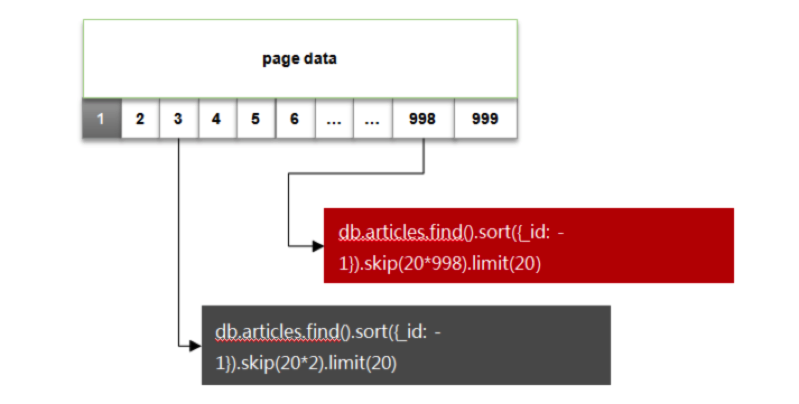
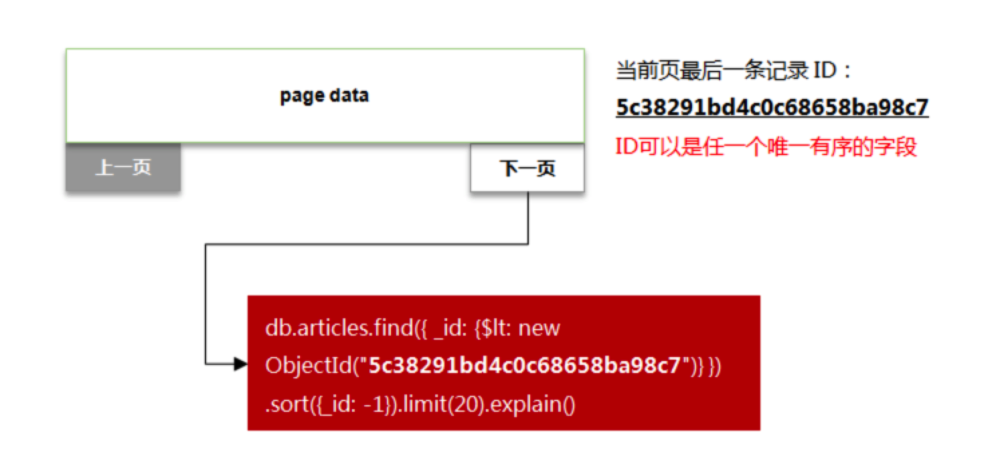
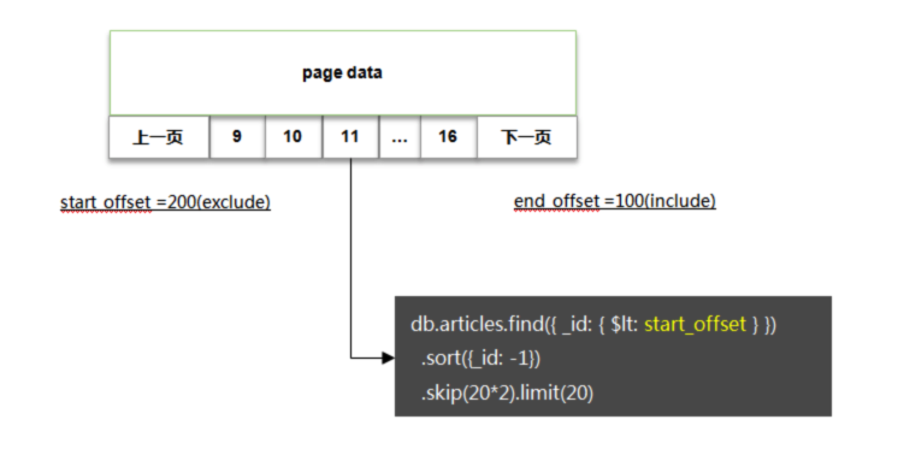

大规模数据集分页处理的相关问题及其解决方案

目录
随着物联网，大数据业务的白热化，一般企业级系统的数据量也会呈现出快速的增长。而传统的数据库分页方案在海量数据场景下很难满足性能的要求。分页在大数据集场景下，是一个务必需要重视的性能优化问题。分页是极为常见的数据展现方式，一般在数据集较大而无法在单个页面中呈现时会采用分页的方法。各种前端UI组件在实现上也都会支持分页的功能，而数据交互呈现所相应的后端系统、数据库都对数据查询的分页提供了良好的支持。本文结合mongodb数据库和Vuex技术，尝试给出一般的大数据分页处理解决方案。
相关设计问题
You paginate whenever you want to process result in chunks. Some common scenarios are：
- Batch processing（批处理）
- Showing huge set of results on user interface（大数据集展示）
Paginating on client and server side are both really very expensive and should not be considered. Hence pagination is generally handled at database level and databases are optimized for such needs too. 无论在客户端还是服务端，分页处理都是相当费时的操作，因此一般分页机制都是在数据库层面进行处理，同时一般数据库都对分页操作进行了良好的优化。
大数据集的分页查询和展示，涉及到以下几个问题：
- 分页UI的设计问题
- 分页API的设计
- 分页数据的管理与缓存（以Vuex为例）
- 分页参数的获取
- 分页查询的性能瓶颈
- 分页查询的基本模式（以mongodb为例）
分页（API）
相关参数
分页展示，一般前端会需要传递以下参数：
| 参数 | 说明 | 备注 |
|---|---|---|
| Page_number | 当前页号 | 必选 |
| Page_size | 每页记录数 | 必选 |
| Page_group_number | 页组号 | 可选 |
| Page_group_max_size | 每个页组中的最大页数 | 可选 |
| Page_group_real_size | 当前页组中的实际页数 | 可选 |
| Total_count | 记录总数 | 可选 |
| Total_page_count | 总页数 | 可选 |
| Total_page_group_count | 总页组数 | 可选 |
| Sort_by_xxx | 排序字段 | 可选，默认为ID |
API 模式
分页API设计模式：Page_based, Time_based, Cursor_based API
- Page_based
curl https://api.github.com/user/repos?page=2&per_page=100
问题：This pattern has a big flaw: if the results list has changed between calls to the API, the indices would shift and cause an item to be either returned twice or skipped and never returned. 查询过程中会由于数据修改，导致出现数据缺失或者数据重复的现象。（对于历史数据，不会出现此问题）
- Time_based
curl https://api.mywebsite.com/items?created_before_timestamp=1505086265160&limit=50
问题：this approach has a major flaw: what if there is more than one item that was created at the same time? So if there were 51 items with the
createdtimestamp of exactly1505086265160, then when we query the next page, we’ll miss the 51st entry because we’re querying items created before 1505086265160. You’ll miss results. 会出现数据缺失的现象。（对于历史数据，也会出现此问题）
- Cursor_based
curl https://api.twitter.com/1.1/followers/ids.json?screen_name=theSeanCook&cursor=1374004777531007833
优点：By returning a “cursor”, the API guarantees that it will return the exactly the next entry in the list, regardless of what changes happen to the collection between API calls. Think of the cursor as permanent marker in the list that says “we left off here”. 排序字段定位模式（推荐模式），此类模式，需要选择一个合适的排序字段（该字段务必具有不可重复、可排序、不可修改的特点，例如 _id）
定位模式API举例
When using the module that runs queries similar the example code below, it’s important that you create the proper MongoDB indexes. This is especially important for large collections (>1k records) as you might accidentally slow your database. So for the below query, always be sure to create a index that covers all the properties used in the query along with the cursor field (called the paginatedField in the module) and the _id field.（注意，对于以下示例中采用的排序字段，务必事先创建索引）
基于 _id
// 首页
curl https://api.mixmax.com/items?limit=2
const items = db.items.find({}).sort({
_id: -1
}).limit(2);
// 下一页定位
const next = items[items.length - 1]._id
res.json({ items, next })
// 下一页
curl https://api.mixmax.com/items?limit=2&next=590e9abd4abbf1165862d342
const items = db.items.find({
_id: { $lt: req.query.next }
}).sort({
_id: -1
}).limit(2);
const next = items[items.length - 1]._id
res.json({ items, next })
基于排序字段（例如时间）
// 首页
curl https://api.mixmax.com/items?limit=2&sort=launchDate
const items = db.items.find({}).sort({
launchDate: -1
}).limit(2);
const next = items[items.length - 1].launchDate;
res.json({ items, next })
// 下一页
curl https://api.mixmax.com/items?limit=2&sort=launchDate&next=2017-09-11T00%3A44%3A54.036Z
const items = db.items.find({
launchDate: { $lt: req.query.next }
}).sort({
_id: -1
}).limit(2);
const next = items[items.length - 1].launchDate;
res.json({ items, next });
基于排序字段与ID字段的混合方式
// 首页
curl https://api.mixmax.com/items?limit=2&sort=launchDate
const items = db.items.find({}).sort({
launchDate: -1,
_id: -1 // secondary sort in case there are duplicate launchDate values
}).limit(2);
const lastItem = items[items.length - 1];
// The cursor is a concatenation of the two cursor fields, since both are needed to satisfy the requirements of being a cursor field
const next = `${lastItem.launchDate}_${lastItem._id}`;
res.json({ items, next });
// 下一页
curl https://api.mixmax.com/items?limit=2&sort=launchDate&next=2017-09-11T00%3A44%3A54.036Z_590e9abd4abbf1165862d342
const [nextLaunchDate, nextId] = req.query.next.split(‘_’);
const items = db.items.find({
$or: [{
launchDate: { $lt: nextLaunchDate }
}, {
// If the launchDate is an exact match, we need a tiebreaker, so we use the _id field from the cursor.
launchDate: nextLaunchDate,
_id: { $lt: nextId }
}]
}).sort({
launchDate: -1,
_id: -1,
}).limit(2);
const lastItem = items[items.length - 1];
// The cursor is a concatenation of the two cursor fields, since both are needed to satisfy the requirements of being a cursor field
const next = `${lastItem.launchDate}_${lastItem._id}`;
res.json({ items, next });
分页查询
分页相关设施
| 函数名称 | 作用 | 性能（备注） |
|---|---|---|
| count | 统计记录总数 | 较差 |
| find | 条件查询（定位游标 cursor） | 一般（索引查询较快） |
| limit | 限制返回数据总量 | 高 |
| skip | 跳过n条记录 | 较差 |
| sort | 排序（1: 升序，-1: 降序） | 一般（无索引情况）,根据排序条件，可事先堆排序字段创建索引。 |
| _id | 记录ID | ObjectId has natural ordering，It simplifies that we can apply all the less-than-s and all the greater-than-s you want to it。同时，It is always indexed。If you are using a field other than _id for offset, make sure the field is indexed and properly ordered else the performance will suffer. |
分页查询模式
| 方案 | 说明 | 性能 |
|---|---|---|
| 1）总数 count；2）首页 db.collection.find().limit(page_size)；3）其他页 db.collection.find().limit(page_size).skip(page_number * page_size) | 常规模式：可跨页查询，数据完整性较好 | 最差 |
| 1）总数 count；2）首页 db.collection.find().limit(page_size)；3）次页 db.collection.find({ _id: {$gt: 上一页最后一个记录的 id}}).limit(page_size).sort({ _id : 1}) | 改良模式：按需翻页，不能跨页查询 | 适中 |
| 1）页组 page_group_page_count = 10, count = page_group_page_count * page_size；2）db.collection.find().limit(count)；3）下一个页组，重新批量查询 | 搜索模式：页组模式，数据完整性为大概模式（例如baidu, google等模式） | 最好 |
性能考虑(mongo)
- 基于查询条件创建索引，尽可能围绕索引构造查询语句；
- 尽量避免使用有过滤条件的count函数统计数据总量（即使是基于索引查询），该操作非常耗时；
- 尽量使用基于索引的范围查询代替skip操作，因为带有大偏移量的skip操作非常耗时。
分页模式
常规模式
传统分页展示，一般前端会需要传递两个参数：页码(当前是第几页)，页大小(每页展示的数据个数)。
问题如下：随着页码的增大，skip 跳过的条目也会随之变大，而这个操作是通过 cursor 的迭代器来实现的，对于cpu的消耗会比较明显。而当需要查询的数据达到千万级及以上时，会发现响应时间非常的长，可能会让你几乎无法接受！或许，假如你的机器性能很差，在数十万、百万数据量时已经会出现瓶颈

改良模式
改进做法：选取一个唯一有序的关键字段，比如 _id，作为翻页的排序字段；每次翻页时以当前页的最后一条数据_id值作为起点，将此并入查询条件中。
优点：这种分页方案其实采用的就是时间轴(TImeLine)的模式，实际应用场景也非常的广，比如Twitter、微博、朋友圈动态都可采用这样的方式。而同时除了上述的mongodb数据库之外，HBase、ElastiSearch 在Range Query的实现上也支持这种模式。
缺点：时间轴(TimeLine)的模式通常是做成“加载更多”、上下翻页这样的形式，但无法自由的选择某个页码。

搜索模式
通常在数据量非常大的情况下，页码也会有很多，于是可以采用页码分组的方式。 以一段页码作为一组，每一组内数据的翻页采用ID 偏移量 + 少量的 skip 操作实现

实现思路：
- 对页码进行分组(groupSize=8, pageSize=20)，每组为8个页码；
- 提前查询 end_offset，同时获得本组页码数量
- 分页数据查询以本页组 start_offset 作为起点，在有限的页码上翻页(skip)。由于一个分组的数据量通常很小(8*20=160)，在分组内进行skip产生的代价会非常小，因此性能上可以得到保证。
分页实践
Google关于分页的处理方法是，采用一定的方法获取匹配到的结果的大概值，这种方法类似于：只匹配重要度排名靠前的部分数据，然后根据这部分所占比例估算出总匹配结果数。在数据呈现时也只显示xxx条左右的数据，因为用户基本不会翻那么多页。这是一种性能与客户体验的折中方案，一般来说，用户在搜索结果的前10页就能解决自己想要的问题。即使没找到，Google认为翻到70页还没找到结果就应该修改或者更换关键词再次搜索了。
搜索引擎分页模式：限制最大的分页数为10页，每页显示的数据条目最大为500条（页数和条数根据情况适当调整）。当用户需要获取[t1, t2]时间段内的数据时，定义一个游标变量lastTime来保存当前最新的一条数据的时间节点。此外，可以为导航栏加上“向前20页”、“向后20页”这样的功能，是完全没有问题的。还有“首页”“末页”也是可以实现的。
- 优点：可以避免使用大偏移量的skip操作，也不需要使用count函数预先统计区间内的数据总量，进而提高性能。
- 缺点：可能会存在数据重复的问题（比如，同一时刻存在多条数据，那么下一页获取的数据中可能会包含上一页的数据项）
- 预加载（首页）
const maxPage = 10; // 按照百度分页方式，跳页数不会大于10
const pageSize = 500; // 每页显示的最大数据量（如果是动态配置，需要同时更新游标）
let data; // 用来保存获取的数据
let lastTime; // 用来保存当前最新的一条数据的时间戳
// 基于时间戳创建索引
db.data.createIndex({time: 1});
// 当我们第一次加载页面时，呈现的是第一页的数据内容
data = db.data.find({time: {"$gte": t1, "$lte": t2}}).limit(pageSize).toArray();
lastTime = data[pageSize - 1].time;
show(data);
- 向前跳页（含下一页）
// 当用户点击下一页或者跳页（正方向）
if (skipPage == 1) { // 下一页处理，如第一页到第二页
data = db.data.find({{time: {"$gte": lastTime, "$lte": t2}}).limit(pageSize).toArray();
} else { // 跳页处理（理论上不常用，如果用户能明确跳转几页可获取到想要的数据项，应该建议用户使用精确匹配，这样查询效率更高），如从第一页跳到第六页，此时skipPage = 5
data = db.data.find({{time: {"$gte": lastTime, "$lte": t2}}).skip(skipPage*pageSize).limit(pageSize).toArray();
}
lastTime = data[pageSize - 1].time;
show(data);
- 向后跳页（含上一页）
// 当用户点击上一页或者跳页（反方向）
if (skipPage == 1) { // 上一页处理，如第二页到第一页
data = db.data.find({{time: {"$gte": t1, "$lte": lastTime}}).sort({time: -1}).limit(pageSize).toArray();
} else { // 跳页处理，如从第六页跳到第一页，此时skipPage = 5
data = db.data.find({{time: {"$gte": t1, "$lte": lastTime}}).sort({time: -1}).skip(skipPage*pageSize).limit(pageSize).toArray();
}
lastTime = data[pageSize - 1].time;
show(data);
数据缓存
将查询到的相关信息缓存起来，当然，缓存也有两种不同的方式：
缓存全部查询到的信息。这个视每次查询到的数据量大小以及你的服务器内存大小而定，不行的话就用第二种方式。
缓存关键索引信息。主要是用户用于排序的字段。
- 缓存页号相关的关键信息
- 以ID为唯一索引的表为例，用户查询后也是按照ID进行排序的，不提供其他排序方式，那么可以采用每10个ID缓存一次的数据结构进行存储，采取10的原因是一般每页显示数量为10,20或50比较常见。如果采用的是键值对方式的缓存方案，如MemberCached或Redis，可以存储为：{key: value} = {id，页号}
- 以可排序字段为例，缓存关键信息结构为：{key: value} = { 排序字段取值:ID，页号}
深度跳页
问题描述
教训：深度分页可以做，但是深度随机跳页绝对需要禁止。
点一下第
142360页，服务会不会爆炸？像MySQL，MongoDB数据库还好，本身就是专业的数据库，处理的不好，最多就是慢，但如果涉及到ES，性质就不一样了，我们不得不利用SearchAfterApi，去循环获取数据，这就牵扯到内存占用的问题，如果当时代码写的不优雅，直接就可能导致内存溢出。
- mongodb
随着页码的增大，skip 跳过的条目也会随之变大，而这个操作是通过 cursor 的迭代器来实现的，对于cpu的消耗会非常明显，当页码非常大时且频繁时，必然爆炸。
- elasticsearch
从业务的角度来说，ElasticSearch不是典型的数据库，它是一个搜索引擎，如果在筛选条件下没有搜索出想要的数据，继续深度分页也不会找到想要的数据，退一步讲，假如我们把ES作为数据库来使用进行查询，在进行分页的时候一定会遇到max_result_window 的限制，看到没，官方都告诉你最大偏移量限制是一万。
解决思路
通过选择合理的UI跳页手段，避免随意深度跳页，例如：
- 尽可能的增加默认的筛选条件，如：时间周期，目的是为了减少数据量的展示
- 修改跳页的展现方式，改为滚动显示，或小范围跳页（搜索引擎分页模式）
终极方案：先定位（find/match），获取固定区间数据ID（limit)，对该区间的数据进行额外处理（aggregate)
推荐方案
基本思路：定位(find)与聚合(aggregate)相结合的方法
获取数据有两种方法：
- find
- 常用于定位到一个数据区间（起始记录ID，或已排序记录ID序列）
- aggregate
- 常用于对指定区间的数据（记录集）进行各种处理
- $skip，在大数据情况下，对于改进查询性能没有帮助
- $limit，对于优化数据处理的性能，有明显改进
基本流程
- 首先获取满足条件的数据总量
- Count
- Aggregate（$count）
- 进行分页计算，确认数据区间的大小
- 分页参数
- Page_size
- Page_number
- Page_count
- Total_count
- 区间参数
- Skip_count（用于获取首记录）
- Limit_count（用于获取数据区间长度）
- 分页参数
- 获取数据区间的首记录
- Find（where）
- Aggregate（Skip，Sort、Group、$first）
- 获取数据区间的记录ID序列
- Record_uuids
- 对数据区间的记录进行处理
- Aggreate
- 返回记录数据和分页信息
尤为注意
- Match 尽量写在 aggregate的最前面
- 优先考虑通过 Find 定位和缩小数据区域
参考代码
- 前端
dr_table_page: {
current_page: 1,
page_size: 10,
total_count: 0
},
let data = {
archive_uuids: this.dr_archive_uuids_with_tags,
page_number: Number(this.dr_table_page.current_page).toFixed(0),
page_size: Number(this.dr_table_page.page_size).toFixed(0)
}
let result = await ArchiveServices.get_data_from_some_archives(data)
if (result.success === false) {
this.dw_table_rows = []
this.dr_table_loading = false
this.dr_table_page.current_page = 1
this.dr_table_page.total_count = 0
this.dw_table_current_row = {}
return false
}
this.dr_archive_record_contents = result.response.data.archive_record_contents
this.dr_table_page.total_count = result.response.data.total_count
- 后端
// 支持分页
func (ctl *ArchiveController) Get_data_from_some_archives() *mvc.Response {
var request_body = iris.Map{}
_ = ctl.Ctx.ReadJSON(&request_body)
archive_uuids := tools.Iarray_to_Sarray(request_body["archive_uuids"].([]interface{}))
archive_uuids = funk.UniqString(archive_uuids)
if len(archive_uuids) <= 0 {
return results.Failure(tools.EmptyMap)
}
var all_archive_record_counts = 0
for _, an_archive_uuid := range archive_uuids {
rs := ctl.Handler_record.Find_total_count_of_all_records_for_archive(an_archive_uuid)
if rs.Success == false {
return results.Failure(rs.Data, rs.Msg)
}
an_archive_record_counts := rs.Data["total_count"].(int)
all_archive_record_counts = all_archive_record_counts + an_archive_record_counts
}
the_archive_record_counts := all_archive_record_counts
the_page_size, _ := strconv.Atoi(request_body["page_size"].(string))
the_page_number, _ := strconv.Atoi(request_body["page_number"].(string))
the_total_count := the_archive_record_counts
the_page_count := int(math.Ceil(float64(the_total_count) / float64(the_page_size)))
var the_skip_count = 0
var the_limit_count = the_page_size
if the_page_number < the_page_count {
start_index := (the_page_number-1)*the_page_size + 1
the_skip_count = start_index
} else {
start_index := 1
if the_archive_record_counts > the_page_size {
start_index = (the_page_count-1)*the_page_size + 1
the_page_number = the_page_count
} else {
the_page_number = 1
}
the_skip_count = start_index
}
rs := ctl.Handler_record.Find_first_record_for_archives(archive_uuids, the_skip_count)
if rs.Success == false {
return results.Failure(rs.Data, rs.Msg)
}
if rs.Data["is_ok"].(bool) == false {
return results.Failure(rs.Data, rs.Msg)
}
//pp.Println("before.find_all_records_for_archives_with_page", the_page_size, the_page_number, the_total_count, the_page_count, the_skip_count, the_limit_count, archive_uuids)
//the_first_record_uuid := rs.Data["record_uuid"].(string)
the_first_record_index := rs.Data["record_index"].(int)
the_first_record_manager_archive_uuid := rs.Data["manager_archive_uuid"].(string)
rs = ctl.Handler_record.Find_all_records_for_archives_with_page(archive_uuids,
the_first_record_manager_archive_uuid, the_first_record_index, the_limit_count)
the_records := rs.Data["records"]
the_record_uuids := tools.Get_fields_from_IMarray(the_records, "record_uuid")
//pp.Println("after.find_all_records_for_archives_with_page", the_record_uuids)
rs = ctl.Handler_record.Get_all_records_for_archives_with_page(the_record_uuids)
if rs.Success == false {
return results.Failure(rs.Data, rs.Msg)
}
//pp.Println("after.get_all_records_for_archives_with_page")
the_archive_record_contents := tools.Interface_to_Iarray(rs.Data["archive_record_contents"])
//pp.Println("the_page_count: ", the_page_count)
data := iris.Map{}
if the_page_number < the_page_count {
//start_index := (the_page_number - 1) * the_page_size
//end_index := start_index + the_page_size
data = iris.Map{
"archive_record_contents": the_archive_record_contents,
"archive_record_counts": the_archive_record_counts,
"page_size": the_page_size,
"page_number": the_page_number,
"page_count": the_page_count,
"total_count": the_total_count,
}
} else {
//start_index := 0
if the_archive_record_counts > the_page_size {
//start_index = (the_page_count - 1) * the_page_size
the_page_number = the_page_count
} else {
the_page_number = 1
}
data = iris.Map{
"archive_record_contents": the_archive_record_contents,
"archive_record_counts": the_archive_record_counts,
"page_size": the_page_size,
"page_number": the_page_number,
"page_count": the_page_count,
"total_count": the_total_count,
}
}
//log.Println(tools.Green(tools.MethodOk()), tools.JsonInfo(data))
return results.Success(data)
}
参考文献
- https://mongoing.com/archives/25469
- https://cloud.tencent.com/developer/article/1702760
- https://segmentfault.com/a/1190000022079466
- https://www.biecuoliao.com/pa/3wEoLbM.html
- https://developer.aliyun.com/article/768447
- https://www.codementor.io/@arpitbhayani/fast-and-efficient-pagination-in-mongodb-9095flbqr
- https://www.mixmax.com/engineering/api-paging-built-the-right-way